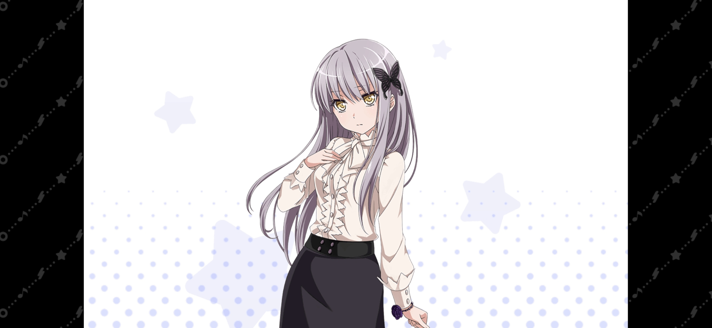

| 圖片 | 姓名 | 擔當 | 聲優 | 生日 | 身高 | 簡介 |
|---|---|---|---|---|---|---|
|  | 湊友希那 | 主唱 | 相羽亞衣奈 | 10月26日 | 155cm | Roselia樂隊的主唱兼領隊，同時也是樂隊的作詞作曲人。 作曲卡殼的解決方法是在周圍撒一圈小零食然後平躺下來祈禱。 就讀於四葉女子大學藝術學部。 內心堅定，絕不懷疑自己相信的事情，純真的性格，偶爾也會對相信的事情過於盲目而忽視身邊的事情。 在眾人面前不怎麼露出笑容，因此給人脾氣不好的印象。 雖然自己知道這個問題，可是依然不介意。 喜歡的食物是蜂蜜茶（對嗓子好）和莉莎做的芥末曲奇，討厭苦瓜（「那不是給人吃的東西。」） 和其他一切苦味食物，喝咖啡要放很多糖。 |
| 冰川紗夜 | 吉他手 | 工藤晴香 | 3月20日 | 161cm | 就讀於慶鵬女子大學法學部。 高中時期曾就讀於花咲川女子學園，在學校是個恪盡職守的風紀委員，輔佐著學生會長兼同樂團的夥伴白金燐子。 平時使用的樂器是反頭吉他ESP M-II ROSELIA SAYO。 認真而又神經質，不知道取巧的性格。 屬於過於認真反而容易吃虧的類型。 其實很喜歡軟綿綿的動物。 |
|
| 今井莉莎 | 貝斯手 | 遠藤祐裡香、中島由貴 | 8月25日 | 158cm | Roselia樂隊的貝斯手，就讀於四葉女子大學國際學部。 喜歡編織和看戀愛故事，愛吃筑前煮和醋拌涼菜，討厭綠色奶昔，怕鬼。 個性開朗、會照顧人而且重視情感，不過因為打扮花俏而常被認為是隨性的人辣妹。 對時尚打扮很瞭解，有很多朋友。 和上原緋瑪麗、桐谷透子並稱邦邦三辣妹。 |
|
| 宇田川亞子 | 鼓手 | 櫻川惠 | 7月3日 | 148cm | Roselia樂隊的爵士鼓手。 喜歡研究自己認為的很帥氣的事。 喜歡洋芋片和雷根糖，討厭海參和青椒，從國中到高中皆就讀於羽丘女子學園。 非常崇拜姐姐宇田川巴，自稱是在姐姐之下的「世界第二強鼓手」。 因為姐姐打鼓很帥氣，所以覺得「我也要變帥！」而開始練習爵士鼓。 進入熱舞部同樣也是追隨姐姐的結果。 總是追求「帥氣」，而她那奇怪的說話方式（中二病）就是追求帥氣而致的副作用。 |
|
 |
白金燐子 | 鍵盤手 | 伊藤彩沙 | 10月17日 | 157cm | Roselia樂隊的鍵盤手。 喜歡玩網路遊戲和填字遊戲，喜歡喝熱牛奶，討厭芹菜。 就讀於四葉女子大學藝術學部。 個性文靜乖巧又保守內向，雖然是個消極的家裡蹲，不過若是決定要鑽研一件事就會做到極致。 彈鋼琴和遊玩網路遊戲便是她鑽研的結果。 家境十分殷實，臥室有一台三角鋼琴，家用電腦也是三屏的。 |